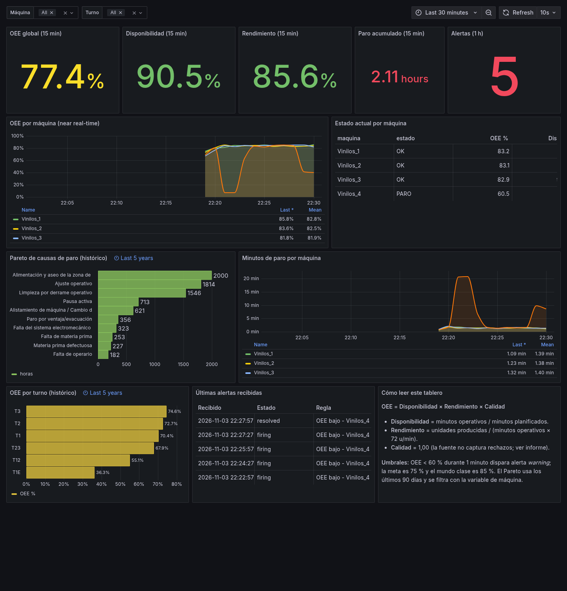
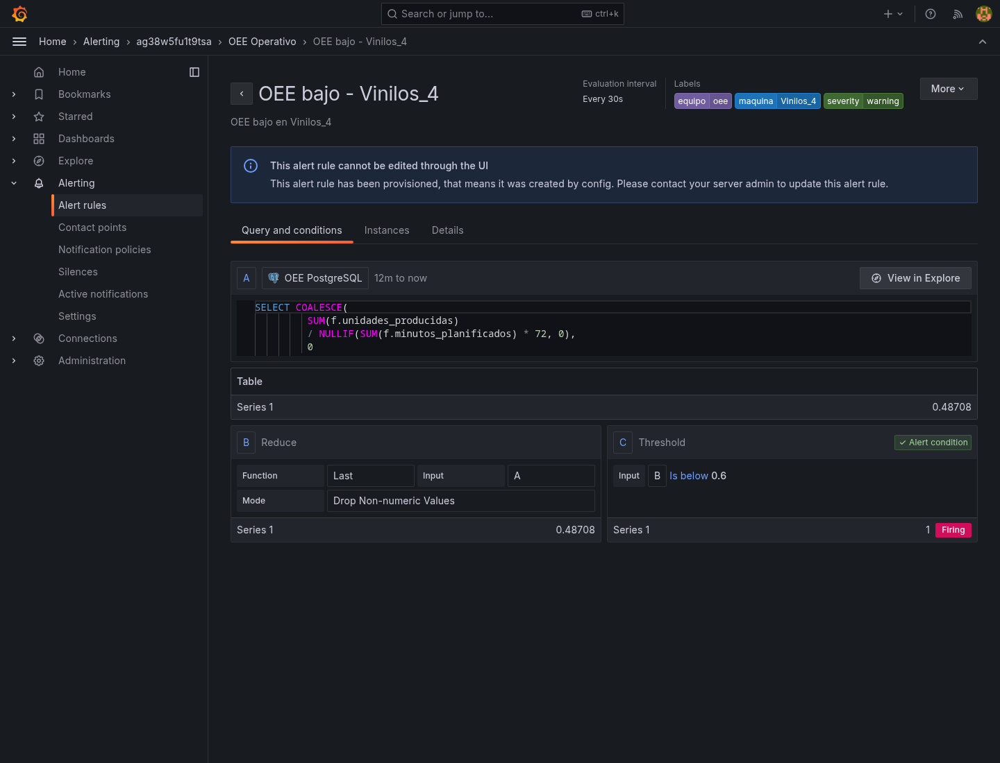
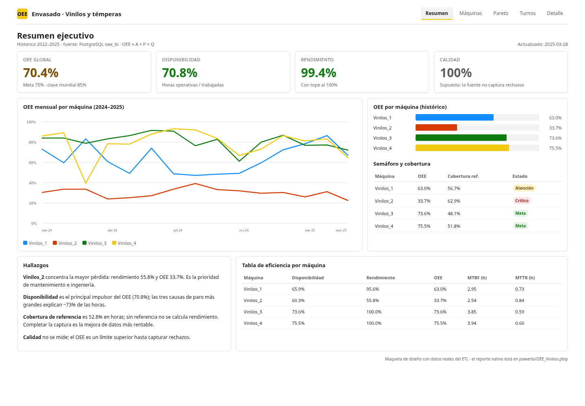
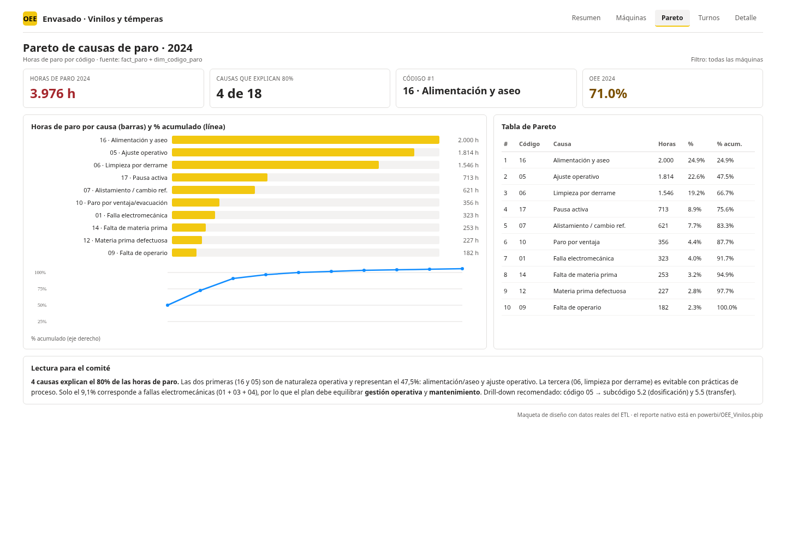

Taller 5 · Inteligencia de Negocios
| Campo | Valor |
|---|---|
| Integrantes | Completar nombre 1 Completar nombre 2 Completar nombre 3 |
| Repositorio | https://github.com/<usuario>/oee-envasado-bi (reemplazar al publicar) |
| Fecha | Noviembre de 2026 |
| Fuente | SEGUIMIENTO TEMPERAS Y VINILOS Actividad.xlsm + P-MTO-22 |
| Stack | PostgreSQL 16 · Python/pandas · Docker Compose · Grafana 11 · Power BI (PBIP/PBIR) |
Se diseñó e implementó una solución de BI end-to-end y contenerizada para las cuatro líneas de envasado. El ETL procesa 8.208 filas históricas (2022-01 a 2025-03), detecta 42 duplicados exactos, normaliza turnos, referencias, códigos y subcódigos, seudonimiza a las personas y carga un modelo en constelación en PostgreSQL. Los totales concilian al 100 % después de deduplicar (377.759 pacas, 37.934,35 horas trabajadas, 8.431,535 horas de paro).
La solución habilita dos capas complementarias:
Resultados principales:
| Indicador | Valor |
|---|---|
| OEE 2024 | 71,0 % |
| OEE 2025 (ene–mar) | 70,2 % |
| Mejor línea (OEE histórico) | Vinilos_4: 75,5 % |
| Peor línea (OEE histórico) | Vinilos_2: 33,7 % |
| Causas que concentran ~73 % de las horas de paro (2024) | 16, 5 y 6 |
| MTBF / MTTR histórico | 2,5–3,9 h / 0,6–0,84 h |
| Cobertura de referencia | 52,8 % de las horas |
Conclusión: la línea Vinilos_2 es la prioridad (rendimiento 55,8 %); las mayores pérdidas son operativas (alimentación/aseo, ajuste operativo, limpieza por derrame), no solo fallas mecánicas. La calidad no se puede medir con la fuente actual: el OEE es un límite superior hasta que se capturen rechazos.
| Stakeholder | Pregunta principal |
|---|---|
| Alta dirección | ¿Cómo evoluciona el OEE y dónde invertir? |
| Jefatura de Producción | ¿Qué turno/referencia limita el plan? |
| Coordinación de Mantenimiento | ¿Cuáles son las causas raíz y el MTBF/MTTR? |
| Supervisores | ¿Cómo está la línea ahora y debo intervenir? |
| Calidad | ¿Cuánto tiempo se pierde por materia prima/laboratorio? |
| TI / Datos | ¿El ETL concilia y es seguro? |
El .xlsm tiene una hoja Base De Datos en formato ancho: 58 columnas y
8.208 filas. Cada fila puede contener producción y hasta 18 códigos de paro.
Hallazgos clave:
Codigo de paro N contiene minutos, no el código; el código
está implícito en la posición N. El ETL lo despivota correctamente.Tiempo de Paro = suma de los 18 pares código/horas en el 100 % de las
filas.Unidad por display contiene turnos en 587 filas; Horas no trabajadas es un
dato de día con semántica inconsistente; Tipo de paro usa una numeración
heredada (1–19).El detalle completo está en documentacion/01_diagnostico.md.
Se conservan los indicadores que reporta hoy el P-MTO-22 (producción general, por máquina, por referencia, horas, % de códigos y análisis 01/03/05) y se proponen 15 KPIs nuevos. Los principales:
| KPI | Fórmula | Unidad | Meta / alerta | Usuario |
|---|---|---|---|---|
| OEE | A × P × Q | % | 75 % / < 60 % | Gerencia |
| Disponibilidad | (horas trabajadas − paro) / horas trabajadas | % | 85 % / < 70 % | Producción |
| Rendimiento | unidades / (minutos operativos × 72) | % | 90 % / < 75 % | Producción |
| Calidad | unidades buenas / producidas | % | 99 % / < 97 % | Calidad |
| MTBF | horas operativas / fallas no programadas | h | ≥ 4 h / < 2 h | Mantenimiento |
| MTTR | horas de paro no programado / fallas | h | ≤ 0,75 h / > 1 h | Mantenimiento |
| Pareto | horas por causa y % acumulado | h / % | 80 % en ≤ 20 % causas | Gerencia |
| Cobertura de referencia | horas con referencia / horas totales | % | ≥ 90 % / < 70 % | TI |
El catálogo completo, con granularidad, fuente y justificación, está en
documentacion/02_requerimientos_kpis.md.
Umbral de la alerta: OEE < 60 % durante 1 minuto. Se justifica como límite de control inferior (meta 75 % − 15 pp); 85 % es clase mundial. En producción se recomienda 5–10 min para evitar fatiga de alertas.
Se usa un esquema en constelación con dos hechos que comparten dimensiones conformadas. No se unen producción y paros en una sola tabla porque una fila de producción puede tener 0..18 paros y una fila hija de paro puede no tener producción; unirlas duplicaría pacas/horas.
| Tabla | Grano |
|---|---|
fact_produccion |
Un registro de producción (fila con pacas u horas, tras deduplicar). |
fact_paro |
Un evento de paro (fila × columna de código 1..18 con minutos > 0). |
fact_produccion_hora |
Un minuto simulado × máquina (near real-time). |
vw_oee_diario_maquina |
Día × máquina. |
vw_oee_mensual_maquina |
Mes × máquina. |
vw_oee_turno |
Mes × turno. |
vw_pareto_paros |
Mes × máquina × código × subcódigo. |
vw_mtbf_mttr |
Día × máquina. |
dim_tiempo (construida): año → trimestre → mes → día; semana ISO; fin de semana.dim_maquina: 4 líneas.dim_turno (construida): T1, T2, T3, T1E, T12, T23, SD.dim_referencia (SCD Tipo 2): unidades/paca y velocidad ideal versionadas.dim_operario / dim_personal: seudónimos.dim_codigo_paro → dim_subcodigo_paro: jerarquía código → subcódigo →
sub-subcódigo (nivel, subcodigo_padre, ruta).SCD Tipo 2 en dim_referencia: la conversión unidades/paca puede cambiar con
el empaque; el OEE histórico debe usar la versión vigente. Un Tipo 1 borraría la
historia; un Tipo 3 no escala a más de dos versiones.
| Proceso | Tiempo | Máquina | Turno | Referencia | Operario | Código | Subcódigo | Área | Personal |
|---|---|---|---|---|---|---|---|---|---|
| Producción | X | X | X | X | X | ||||
| Paros | X | X | X | X | X | X | X | X | X |
| OEE diario | X | X | |||||||
| OEE turno | X | X | X | ||||||
| Pareto | X | X | X | X | |||||
| MTBF/MTTR | X | X | |||||||
| Near real-time | X | X | X | X |
Detalle y diagrama ER en documentacion/03_modelo_dimensional.md.
Cada tabla tiene descripción, columnas, tipos, PK/FK, regla de transformación y origen. Ejemplos:
| Destino | Origen | Regla |
|---|---|---|
fact_produccion.pacas_producidas |
Pacas producidas |
Numérico; imputa 0 si falta; marca es_incompleto. |
fact_produccion.unidades_producidas |
pacas × unidades_por_paca |
Nulo si no hay referencia. |
fact_paro.minutos_paro |
Codigo de paro N |
Es minutos, no código; se despivota. |
fact_paro.horas_paro |
Codigo N en horas |
Si falta, minutos/60. |
dim_operario.seudonimo |
Operario |
OP- + SHA-256(salt+nombre)[:8]. |
dim_referencia.unidades_por_paca |
Catálogo / regla de formato | 600 para 6 col 22cc, 45 para 125cc, etc. |
dim_tiempo |
generate_series |
Calendario 2021–2027. |
El diccionario completo está en
documentacion/04_diccionario_datos.md.
Python 3.12 + pandas + openpyxl + psycopg2, en Docker. Se eligió por
reproducibilidad, pruebas unitarias, lectura de .xlsm sin macros y despliegue
con un solo comando. Alternativas (Power Query, Talend, scripts manuales) se
descartaron por acoplamiento a Windows, sobredimensionamiento o falta de
reproducibilidad.
| Concepto | Bruto | Después de dedup | Diferencia |
|---|---|---|---|
| Filas | 8.208 | 8.166 | −42 |
| Registros de producción | 5.157 | 5.137 | −20 |
| Eventos de paro | 16.532 | 16.482 | −50 |
| Pacas | 378.778 | 377.759 | −1.019 |
| Horas trabajadas | 38.063,35 | 37.934,35 | −129,00 |
| Horas de paro | 8.449,65 | 8.431,54 | −18,12 |
Las diferencias brutas corresponden exactamente a los 42 duplicados (1.019 pacas, 129 h, 18,12 h). La conciliación crítica (fuente dedup vs cargado) da 0 en todas las métricas. El ETL falla si alguna métrica crítica supera 0,01 de tolerancia.
25 reglas en audit.etl_quality: duplicados, fechas, máquinas, negativos,
descuadre de paro, cobertura de referencia, turno, subcódigo, outliers,
incompletos, PII, etc. Las reglas con 0 afectadas se registran como INFO con
prefijo OK.; las que sí tienen hallazgos quedan como WARN (10 en la última
corrida).
Los nombres se seudonimizan con SHA-256 + sal; el texto libre se redacta con
[PERSONA]. La validación pii_nombres_en_staging da 0. El nombre real solo
existe en data/raw (ignorado).
Detalle en documentacion/05_etl_calidad.md.
oee, stg, audit.db/queries/ con RANK, LAG, SUM() OVER,
AVG() OVER, ROW_NUMBER, FILTER, ROLLUP/UNION ALL.Ver documentacion/06_consultas_sql.md.
maquina y turno (multivalor, All).OEE < 0,60 durante 1m.audit.alertas_recibidas.

La regla muestra 0.48708 < 0.6 y estado Firing; el tablero muestra la
caída de Vinilos_4 y la tabla de alertas con firing/resolved.
Ver documentacion/07_grafana.md.
model.bim (TMSL), sin .pbix binario.localhost:5432, oee_bi, usuario oee_bi), modo
Import. Credenciales fuera del proyecto._Medidas.OEE %, Disponibilidad %, Rendimiento %, Calidad %, OEE YTD %,
OEE Año Anterior %, Var OEE YoY pp/%, Horas Paro, Eventos Paro,
MTBF (h), MTTR (h), Cobertura Referencia %, Pareto % Acumulado,
Semáforo OEE, OEE vs Meta pp.
La inteligencia de tiempo se apoya en dim_tiempo marcada como tabla de fechas
y TOTALYTD / SAMEPERIODLASTYEAR.
Roles Supervisor_Vinilos_1..4 con filtro en dim_maquina[codigo] y
Gerencia sin filtro. El filtro se propaga a los hechos.


Las capturas nativas deben generarse al abrir
powerbi/OEE_Vinilos.pbipen Power BI Desktop (Windows). La maqueta usa la misma narrativa y los datos del ETL.
Ver documentacion/08_powerbi.md.
flowchart LR
X[".xlsm"] --> ETL["ETL Python"]
ETL --> PG["PostgreSQL 16"]
PG --> G["Grafana\nnear real-time"]
PG --> P["Power BI\nestratégico"]
SIM["Simulador"] --> PG
G -->|webhook| A["audit.alertas"]
| Dimensión | Grafana | Power BI |
|---|---|---|
| Pregunta | ¿Qué pasa ahora? | ¿Qué pasó y por qué? |
| Usuario | Supervisor, mantenimiento | Gerencia, jefatura |
| Frecuencia | 10 s–1 min | Diaria/mensual |
| Fortaleza | Series, estado, alertas | Modelo, DAX, RLS, narrativa |
| ¿Intercambiables? | No | No |
Por qué no son intercambiables: Grafana no ofrece un modelo semántico ni DAX para el comité; Power BI no está diseñado para refresco subminuto ni alertas operativas nativas. Se complementan sobre el mismo dato.
Ver documentacion/09_arquitectura_seguridad.md.
oee_etl (RW), oee_bi (RO), oee_grafana (RO),
oee_admin (DDL)..env (600) + .env.example; .gitignore excluye docs/,
data/raw, .env, .pbix.etl_run, etl_quality, etl_reconciliacion,
alertas_recibidas.Si el dato llega de PLC/SCADA, se mantiene el modelo dimensional y cambia la ingesta:
Ver documentacion/10_evolucion_scada.md.
cp .env.example .env # cambiar credenciales y PII_SALT
mkdir -p data/raw # copiar el .xlsm y el PDF
make up # PostgreSQL + Grafana
make etl # carga + calidad + conciliación
make sim # simulador + webhook
make test # 7 pruebas unitarias
Estructura, comandos y troubleshooting en README.md.
Git: el repositorio incluye commits por fase (diagnóstico, modelo, DDL, ETL,
Grafana, Power BI, docs). docs/, data/raw/, .env y .pbix están ignorados.
unidades_rechazadas al formato P-MTO-22.rendimiento_calculado y un estudio de tiempos.dim_tiempo).dim_referencia justificada.make etl.RANK, LAG, SUM() OVER y comparativos..env.example y .gitignore; sin credenciales.git log).| Recurso | Ruta |
|---|---|
| Diagnóstico | documentacion/01_diagnostico.md |
| KPIs | documentacion/02_requerimientos_kpis.md |
| Modelo | documentacion/03_modelo_dimensional.md |
| Diccionario | documentacion/04_diccionario_datos.md |
| ETL/calidad | documentacion/05_etl_calidad.md |
| SQL | documentacion/06_consultas_sql.md |
| Grafana | documentacion/07_grafana.md |
| Power BI | documentacion/08_powerbi.md |
| Seguridad | documentacion/09_arquitectura_seguridad.md |
| SCADA | documentacion/10_evolucion_scada.md |
| DDL | db/init/01_schema.sql |
| Consultas | db/queries/ |
| Dashboard Grafana | grafana/dashboards/oee_operativo.json |
| Proyecto Power BI | powerbi/OEE_Vinilos.pbip |
| Medidas DAX | powerbi/DAX_medidas.md |
| Presentación de 15 min | informe/presentacion_oee.pptx |
| Guion de exposición | documentacion/12_guion_exposicion.md |
| Cuestionario de práctica | documentacion/13_cuestionario_practica.md |